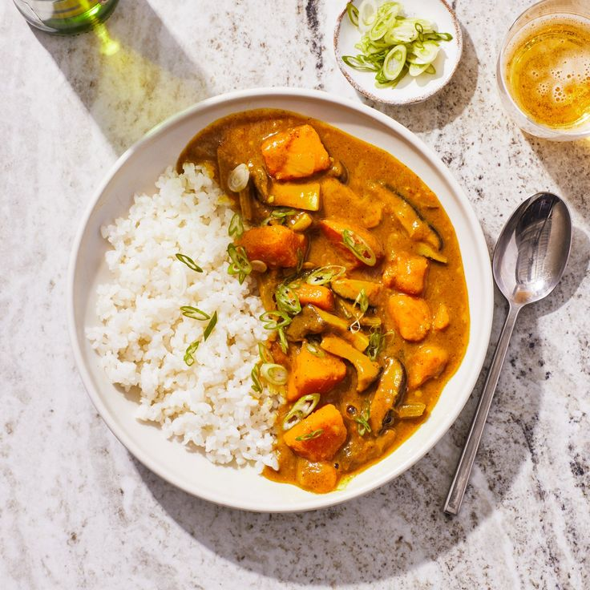

How to make japanese curry:

How to make a perfect japanese curry.
Curry chunks
Vegatables of your choice
Rice
Salt
Oil
Garlic
Onions
Make the rice
In a pan, heat up the oil and stir fry the onions and garlic
Once translucent, add your chopped vegetables along two cups of water
Boil for 15mins
Add the curry chunks
Stir until curry chunks have disolved
Enjoy